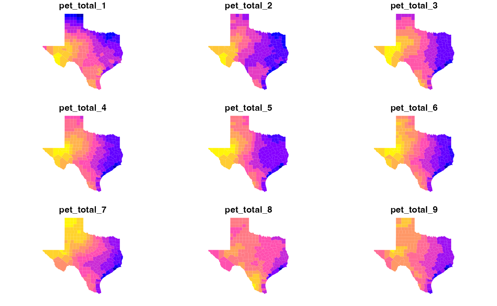

library(opendap.catalog)
library(zonal)
(cat = search('terraclim')[1:6,])
#> # A tibble: 6 × 16
#> id grid.id URL tiled variable varname long_name units model ensemble
#> <chr> <chr> <chr> <chr> <chr> <chr> <chr> <chr> <chr> <chr>
#> 1 terraclim 110 http:… "" aet aet water_ev… mm NA NA
#> 2 terraclim 110 http:… "" def def water_po… mm NA NA
#> 3 terraclim 110 http:… "" PDSI PDSI palmer_d… unit… NA NA
#> 4 terraclim 110 http:… "" pet pet water_po… mm NA NA
#> 5 terraclim 110 http:… "" ppt ppt precipit… mm NA NA
#> 6 terraclim 110 http:… "" q q runoff_a… mm NA NA
#> # … with 6 more variables: scenario <chr>, T_name <chr>, duration <chr>,
#> # interval <chr>, nT <int>, rank <dbl>
system.time({
dap <- dap(
catolog = cat,
AOI = AOI,
startDate = "2005-01-01" )
})
#> source: http://thredds.northwestknowledge.net:8080/thredds/dodsC/agg...
#> varname(s):
#> > aet [mm] (water_evaporation_amount)
#> > def [mm] (water_potential_evaporation_amount_minus_water_evaporation_amount)
#> > PDSI [unitless] (palmer_drought_severity_index)
#> > pet [mm] (water_potential_evaporation_amount)
#> > ppt [mm] (precipitation_amount)
#> > q [mm] (runoff_amount)
#> ==================================================
#> diminsions: 316, 257, 1 (names: lon,lat,time)
#> resolution: 0.042, 0.042, 1 months
#> extent: -106.67, -93.5, 25.83, 36.54 (xmin, xmax, ymin, ymax)
#> crs: +proj=longlat +a=6378137 +f=0.00335281066474748 +p...
#> time: 2005-01-01 to 2005-01-01
#> ==================================================
#> values: 487,272 (vars*X*Y*T)
#> user system elapsed
#> 0.999 0.131 6.294
system.time({
multi_var = execute_zonal(file = dap, AOI, "fip_code")
})
#> user system elapsed
#> 0.873 0.021 0.897
Through time
system.time({
(dap <- dap(
catolog = cat[4,],
AOI = AOI,
startDate = "2005-01-01",
endDate = "2005-12-01"
))
})
#> source: http://thredds.northwestknowledge.net:8080/thredds/dodsC/agg...
#> varname(s):
#> > pet [mm] (water_potential_evaporation_amount)
#> ==================================================
#> diminsions: 316, 257, 12 (names: lon,lat,time)
#> resolution: 0.042, 0.042, 1 months
#> extent: -106.67, -93.5, 25.83, 36.54 (xmin, xmax, ymin, ymax)
#> crs: +proj=longlat +a=6378137 +f=0.00335281066474748 +p...
#> time: 2005-01-01 to 2005-12-01
#> ==================================================
#> values: 974,544 (vars*X*Y*T)
#> user system elapsed
#> 0.862 0.044 2.556
system.time({
time_ex = execute_zonal(file = dap, AOI, "fip_code")
})
#> user system elapsed
#> 1.079 0.020 1.105